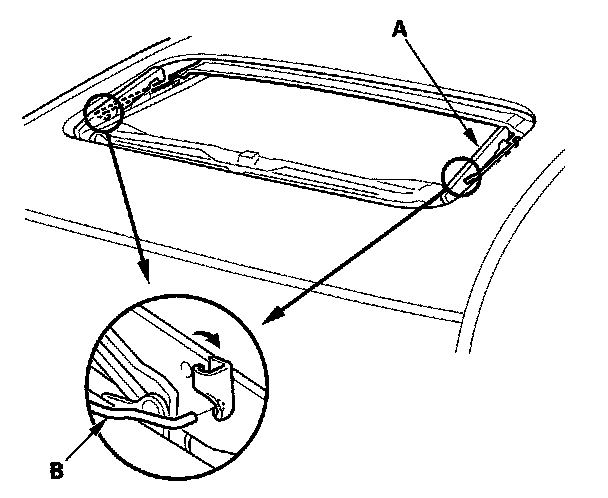
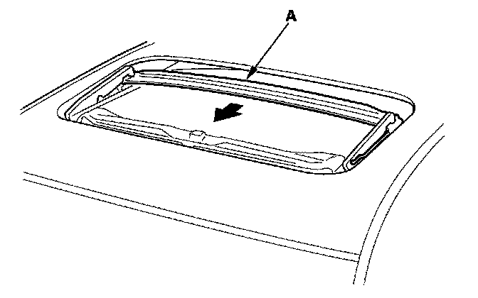
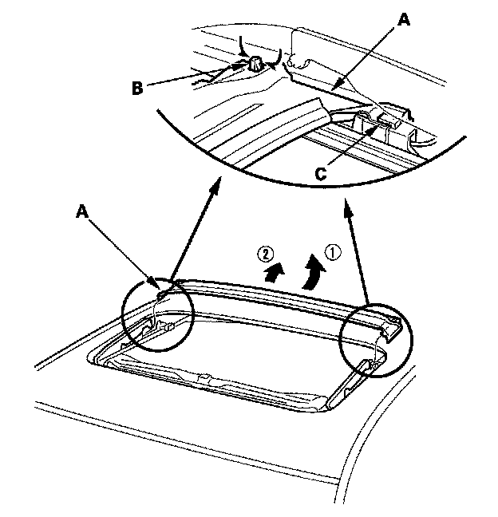

Drain Channel Replacement
Drain Channel Replacement1. Remove the glass.

2. With the moonroof wrench, move both glass brackets (A) to the position where the moonroof normally tilts up and disconnect the drain channel rods (B) on both sides.

3. Slide the drain channel (A) forward.

4. Pull the rear edge of the drain channel (A) up while pushing both clips (B), and release the channel from both hooks (C) of the drain channel slider by pulling it rearward.
5. Remove the drain channel.
6. Install the channel in the reverse order of removal, and note these items:
- Push the clip portions into place securely.
- Check the glass position adjustment.
7. Check for water leaks. Let the water run freely from a hose without a nozzle. Do not use a high-pressure spray.